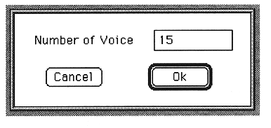
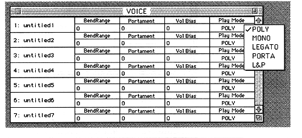

-
Launches the sound editor.
The sound editor first checks if there is a board with SCSP on the Macintosh.
If the board is not connected, this software will be terminated.
-
Select New from the File menu.
A dialog box for setting the number of voices appears.

-
Enter the number of voices. Here, enter 1.
The Voice window will appear.

Only one line is displayed at this time because the number of voices is set to 1. You can change this number later.